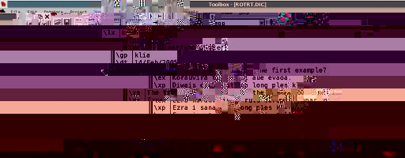

This tutorial introduces the Shoebox capabilities of the Natural Language Toolkit (NLTK) for Python. Here we concentrate on Shoebox dictionaries rather than interlinearized texts. (As soon as the NLTK provides full-support for handling Shoebox interlinear texts, a follow-up tutorial will be made available.)
Shoebox (and its latest incarnation, Toolbox) is a computer program used by many linguists to handle fieldwork data. The description of the program provided on the Shoebox homepage sums it up quite nicely:
"Shoebox is a computer program that helps field linguists and anthropologists integrate various kinds of text data: lexical, cultural, grammatical, etc. It has flexible options for sorting, selecting, and displaying data. It is especially useful for helping researchers build a dictionary as they use it to analyze and interlinearize text. The name Shoebox recalls the use of shoe boxes to hold note cards on which definitions of words were written in the days before researchers could use computers in the field."
A sample entry from a Shoebox dictionary of Rotokas (East Papuan, spoken on Bougainville) is provided below. Note the program displays the data in two columns: on the left are the field markers, which identify different data fields; on the right are the field values, which provide the information about the fields on the left for an entry (in this case, the entry for the lexeme korau).
|  |
Alternative views of the data are possible. For example, below we find the same data displayed in three columns: on the left are the field markers and their descriptions; on the right are the field values (the data for a particular entry).
|
It is possible to look at this data in its raw form using any word processor (e.g., Notepad, MS Word, etc.) or text editor (e.g., vi, emacs, etc.). We provide here a full Shoebox/Toolbox dictionary file for Rotokas which includes only entries beginning with the letter 'k': ROTRT.DIC. Here is what a sample entry from it looks like:
\lx korau \ps V.A \ge clear \ge unobstructed \gp klia \dt 14/Feb/2005 \cmt What is aue doing in the first example? \ex Korauvira toupai aue evaoa. \xp Diwais em i stap long ples klia. \xe The trees are in the clearing. \ex Ezra korauvira rutu toreparoi. \xp Ezra i sanap long ples klia. \xe Ezra is standing up in the clearing. |
This raw data is simply text and can be manipulated programmatically. Being able to manipulate Shoebox databases programmatically is extremely useful. Although Shoebox is a very full-featured program with good data analysis capabilities, there is no substitute for the flexibility a bona fide programming language provides. Anyone who uses Shoebox has no doubt at some point wanted to perform a particular type of analysis but found the inherent capabilities of Shoebox inadequate for the task. For example, it would be quite difficult to query a Shoebox dictionary and obtain every example sentence, formatted for insertion in word processor, for an entry that begins with a particular consonant, ends with a particular suffix, and belongs to a particular part of speech. Using the NLTK with Shoebox, such a query is straightforward.
Here we will learn how to use the Natural Language Toolkit for Python to manipulate Shoebox data of this sort. Although this tutorial does not require intimate knowledge of Shoebox, it is a good idea to familiarize yourself with at least the basics of the application. Fortunately, there is a good deal of documentation available (see the links at the end of this tutorial). (The programs really are quite similar and the skills acquired on one transfer to the other almost entirely.)
Let's begin by looking at how nltk.shoebox is organized. Within nltk.shoebox, there are two main modules: standardformat.py and shoebox.py. The standardformat modules handles most of the low-level functions for dealing with files in standard format (which in theory encompasses more than Shoebox files). The shoebox modules handles a good deal more, providing functionality for handling various aspects of standard format files that are specific to the Shoebox program. We will look at each in turn.
The first is a module that provides functionality for handling Standard Format, the file format used by Shoebox. Standard format is not well described (and is arguably rendered obsolete by other formats, such as XML). It consists of a collection of entries, which are generally separated from one another by double carriage returns. (Technically, what defines the beginning of an entry is a particular field, sometimes referred to as the head field.)
A sample entry from a Frisian Shoebox dictionary is provided below:
\fri do \ps Pron \g you \eng you |
It is broken down into its constituent parts here:
| Field | Field Marker | Field Value |
| 1 | \fri |
do |
| 2 | \ps |
Pron |
| 3 | \g |
you |
| 4 | \eng |
you |
Note that the field marker occurs at the beginning of a line and is preceded by a backslash and that the field value is separated from the field marker by a single space mark.
Shoebox data is saved in a format known as Standard Format, which is described in more details elsewhere (click here for some documentation). Although most users interact with only one or two Shoebox files, many more are generated by the program. These files are normally modified from within Shoebox, using its handy graphical interface, but they can also be directly edited. However, this should be done with caution, since minor changes can have dramatic effects. We recommend that changes be made to copies of files and not to the originals. This significantly reduces the likelihood of irretrievable errors that lead to data loss.
To understand a little better what goes on under the hood, we will look at the files from Samples/Frisian1/.
| File | Description | |
| Fri.prj | Frisian Project File | |
| Default.lng, Frisian.lng | Language encoding files | |
| FrisianD.typ | Metadata for Frisian dictionary | |
| FriRt.dic | Frisian dictionary | |
| FrisianT.typ | Metadata for Frisian texts | |
| FriSampl.txt | A sample interlinear text in Frisian |
It is useful to distinguish between two types of files: data files, which contain actual language data (lexicon, text, etc.), and metadata files, which contain information about the language data (rather than the actual data itself). Data files are directly modified by the user through the Shoebox program, whereas metadata files are modified indirectly, by the program itself.
As an illustration, consider a particular entry from the Frisian dictionary, the one for the word a. It had four field markers: eng, fri, g, and ps. Information about these field markers is found in FrisianD.typ. Excerpts from this file are provided below:
| Field Markers | eng | fri | g | ps |
| Metadata Definition | \+mkr eng \nam English \lng Default \mkrOverThis fri \-mkr |
\+mkr fri \nam Frisian Word \lng Frisian \-mkr |
\+mkr g \nam Gloss \lng Default \mkrOverThis fri \-mkr |
\+mkr ps \nam Part of Speech \lng Default \mkrOverThis fri \-mkr |
When metadata of this sort is available, it is possible to validate Shoebox data against it in order to ensure that the data is well-formed. In one of the cases examined below (Case 8: Validating Field Data Against Range Sets), we will see how the fields of a Shoebox dictionary can be validated against metadata to ensure that all of the field values for a particular field marker belong to a fixed list of possible values.
For these demonstrations of nltk.shoebox functionality, we will manipulate the sample Shoebox files that come with Shoebox (in the folder Samples). Because the sample files can be useful when learning how to use Shoebox, most users prefer to keep an unmodified version of them. Therefore, we recommend making a backup of these files before trying the scripts below.
For this case study, we will manipulate the Frisian dictionary that comes with Shoebox. Our goal is to add to each entry in the lexicon a field that provides the CV skeleton for that entry. For example, the CV skeleton for brek is CCVC and for bikwaam, CVCCVVC. The Shoebox functionality of the NLTK significantly simplifies the job of going through each entry and computings its CV skeleton, as can be seen by add-cv-skeleton.py.
To see the script in operation, we can run it on one of the Frisian dictionaries that accompanies Shoebox, Samples/Frisian1/FriRt.dic, as follows:
$ python bin/add-cv-skeleton.py -f samples/Frisian1/FriRt.dic |
Because the scripts writes to standard output, its output can be redirected to a file in order to create a new version of the processed Shoebox dictionary file, as illustrated below:
$ python bin/add-cv-skeleton.py -f samples/Frisian1/FriRt.dic > samples/Frisian1/FriRt-new.dic |
When the new version of the lexicon is opened again with Shoebox, the only change is the inclusion of a cv field in every entry, as can be seen in the following "before and after" screenshots:
| Before | After | |
EXPLAIN HOW IT WORKS--IN DETAIL
def main() :
filepath = handle_options()
fp = StandardFormatFileParser(filepath)
sff = fp.parse()
print sff.getHeader()
for entry in sff.getEntries() :
headField = e.getHeadField()
frisian = headField[1]
entry.addField("cv", cv(frisian))
print e
|
???
def cv(s):
s = s.lower()
s = re.sub(r'[^a-z]', r'-', s)
s = re.sub(r'[^aeiou\-]', r'C', s)
s = re.sub(r'[aeiou]', r'V', s)
return (s)
|
???
It is sometimes useful to be able to remove extraneous fields from a dictionary. The script filter-fields.py prints out the contents of a Shoebox dictionary, omitting the field specified by the user on the command-line. To see how it works, we will run the filter on the Rotokas dictionary ROTRT.DIC, filtering out the date field (\dt), as follows:
$ python bin/filter-fields.py -f samples/Rotokas/ROTRT.DIC -f dt |
In order to filter out multiple fields, the script can be run multiple times, as illustrated below:
$ python bin/filter-fields.py -f samples/Rotokas/ROTRT.DIC -f dt > /tmp/foo1.txt $ python bin/filter-fields.py -f /tmp/foo1.txt -f cmt > /tmp/foo2.txt $ python bin/filter-fields.py -f /tmp/foo2.txt -f nt > samples/Rotokas/ROTRT-FILTERED.DIC |
To understand how the script works, we'll look at the main() function, provided below:
def main() :
filepath = handle_options()
fp = StandardFormatFileParser(filepath)
sff = fp.parse()
print sff.getHeader()
for e in sff.getEntries() :
lex = e.getHeadField()[1]
pos = e.getFieldValuesByFieldMarkerAsString("ps")
gloss = e.getFieldValuesByFieldMarkerAsString("ge")
eng = e.getFieldValuesByFieldMarker("eng")
if eng :
print "%s (%s) ``%s''" % (lex, pos, ", ".join(eng))
else :
print "%s (%s) ``%s''" % (lex, pos, gloss)
|
The function handle_options() first obtains from the command-line the path to a Shoebox file and the field to be filtered. Then the Shoebox dictionary is parsed into a StandardFormatFile object. A list of entries is obtained using the getEntries() method and then iterated over. From each entry, the following fields are obtained:
Note that the English translations are obtained using a different accessor method, getFieldValuesByFieldMarker(). This is because the English translation field differs from the others by being both optional and non-unique. If an entry lacks this field, an empty-list is returned. The if-loop checks whether the list is empty. If it is, the non-optional gloss field is printed out. If the list is non-empty, its items are joined with commas into a string; otherwise, the non-optional gloss field is printed out.
When studying the phonology of a language, it is useful to have a list of minimal pairs---which for our purposes here we will deifne as a pair of words that differ from one another by a single segment (e.g., bill and pill in English). Producing such minimal pairs from memory can be difficult. Fortunately, it is relatively easy to extract minimal pairs automatically from word lists, provided that the orthography in the word list is phonemic (i.e., characters represent phonemes) and that each phoneme is represented by a different alphanumeric character (i.e., a number or letter).
With a monographic, phonemic orthography, finding minimal pairs is a fairly trivial task. One simple algorithm for identifying minimal pairs goes as follows: Every word in the word list is compared to every other word. If two words are of different lengths, they cannot be a minimal pair, and can therefore be ignored. If two words are of the same length, the two words are lined up and each segment in the word is compared one by one, in sequential order. A minimal pair is simply a pair of words that differ only by one segment. (This can be easily determined by keeping a counter of the number of differing segments.) Consider a pair of words like mint and lint. If we line up the two words, and compare their letters one by one, we find that they differ by a single letter, and are therefore a minimal pair, as shown below:
|
Here we provide a simple script that takes a Shoebox dictionary and extracts all of the minimal pairs in it: find-min-pairs.py. The first part of the program uses the NLTK's Shoebox functionality to extract all of the words from the Shoebox dictionary.
def extractWords(f) :
words = []
fp = StandardFormatFileParser(f)
sf = fp.parse()
for e in sf.getEntries() :
fri = e.getFieldValuesByFieldMarkerAsString("fri")
words.append(fri)
return words |
The words are then fed into the function that finds minimal pairs. It first sorts them by length using a dictionary in which the key is a word length and the value is a list of words of that length.
def sortWordsByLength(words) :
wordLengths = {}
for w in words :
wl = len(w)
if not wordLengths.has_key(wl) :
wordLengths[wl] = []
wordLengths[wl].append(w)
return wordLengths
def findMinPairs(words) :
wordsByLength = sortWordsByLength(words)
for l in wordsByLength.keys() :
words = wordsByLength[l]
for w1 in words :
for w2 in words :
i = 0
diffCount = 0
diffChar1 = ''
diffChar2 = ''
while i < l :
if not w1[i] == w2[i] :
diffCount = diffCount + 1
diffChar1 = w1[i]
diffChar2 = w2[i]
i = i + 1
if diffCount == 1 :
print "%s/%s:%s/%s" % (diffChar1, diffChar2, w1, w2) |
The code above automatically extracts a list of minimal pairs from a dictionary, provided that the dictionary uses the field marker lx for the lexical entry itself. The script takes a command-line argument specifying the path to the dictionary file. Using the NLTK, every lexical entry in the dictionary is extracted and sorted by length before being stored in a dictionary, where the key is a wordlength and the value is the list of words of that length (e.g., 1 for a or I, 2 for an, to, or it, etc.). It thens goes through each wordlist and compares words of the same length to see whether they constitute a minimal pair.
Raw Shoebox data isn't easy for people to read. (To use computer science parlance, it isn't very human-readable.) Therefore it's useful to be able to reformat a Shoebox dictionary file according to your wishes. Although Shoebox has in-built facilities for producing formatted dictionaries, they are not as flexible or as powerful as a full-fledged programming language such as Python. Here we will stick to the basics and see how a plain text, minimally formated version of a Shoebox dictionary can be produced using the NLTK.
The script reformat-dict.py does the job. It is fun as follows:
$ python bin/reformat-dict.py -f samples/Rotokas/ROTRT.DIC |
The script is quite simple. It simply parses a Shoebox dictionary file, goes through each entry, retrieves selected fields, and then prints them out with some bare bones formatting: the lexeme, the part-of-speech in parentheses, and the English translation in quotes. Note that the translation is created dynamically, but first checking whether the field eng exists for an entry, and then falling back on ge if it does not.
def main() :
filepath = handle_options()
fp = StandardFormatFileParser(filepath)
sff = fp.parse()
print sff.getHeader()
for e in sff.getEntries() :
lex = e.getHeadField()[1]
pos = e.getFieldValuesByFieldMarkerAsString("ps")
gloss = e.getFieldValuesByFieldMarkerAsString("ge")
eng = e.getFieldValuesByFieldMarker("eng")
if eng :
print "%s (%s) ``%s''" % (lex, pos, ", ".join(eng))
else :
print "%s (%s) ``%s''" % (lex, pos, gloss)
|
It would be a trivial matter to change the formatting---say, by putting the part-of-speech in lowercase. We leave this as an exercise for the reader.
If properly configured (see date stamps documentation), Shoebox will automatically update the date field of a dictionary entery whenever that entry is modified (created or edited). We will refer to this date field as a date stamp. Date stamps are a very useful feature with a number of possible applications, but one obvious use is that they provide an inherent log of activity in a database. This can be quite useful if one person wishes to review the changes made to a database by another, as might be the case when a Shoebox dictionary is shared by multiple parties. (Shoebox makes few provisions for multi-user set-ups.)
By looking at date stamps, it is possible to quickly determine the general patterns of activity on a database. Essentially, this means being able to quickly and easily answer questions such as the following: When was the database originally created? When was it first modified? When was it last modified? These questions can be answered using the script list-modified-dates.py, which takes a Shoebox dictionary and provides a summary of the activity on it using entry date stamps. Its use with ROTRT.DIC is illustrated below:
$ python bin/list-modified-dates.py -f samples/Rotokas/ROTRT.DIC YEAR MONTH COUNT 2003 May 2 2004 Jan 1 2004 Feb 64 2004 May 1 2004 Jul 14 2004 Aug 4 2004 Sep 49 2004 Oct 5 2004 Nov 5 2004 Dec 151 2005 Jan 123 2005 Feb 307 2005 Mar 37 2005 Apr 29 2005 May 46 |
The output of the program is a breakdown of the number of entries modified during a particular month of a particular year. In the previous example, we see that the entries in the dictionary were modified between 2003 and 2005 with a peak of activity between December 2004 and Feb 2005.
The Shoebox functionality of the NLTK greatly simplifies this programming task. In fact, the only real complication is the handling of dates and times in Python (see ??? for documentation). To understand how the script works, we will first look at the function main(), which calls a number of custom functions. First, the file to be processed is obtained from the command line. Second, the file is parsed and the date fields of every entry is put into a dictionary, where each key is a particular dates whose associated value is a count of the number of entries modified on that date. Finally, the contents of this dictionary are printed out for display.
def main() :
fn = handle_options()
d = process_file(fn)
print_results(d)
|
PROVIDE MORE DESCRIPTION AND EXPLANATION
In the function print_results(d) for display the months are converted from integers to strings for the sake of readability. This is done using a custom fuction format_month(intMonth). It would also be possible to do this conversion with built-in functionality from the Python standard library.
Once we have a general idea of when a database has been modified, it would be useful to be able to view only the entries within a particular time range. The script find-modified-entries.py takes a Shoebox dictionary and lists all entries modified within a time range specified by the user using command-line options. The logic of the script is reasonably straightforward:
Here we illustrate its use ???
$ python bin/find-modified-entries.py -s samples/Rotokas/ROTRT.DIC |
The script works by parsing the Shoebox dictionary into a StandardFormatFile object and iterating over its entries. Entries that match the time range specified by the user are listed; all others are ignored. If the user specifies a date on the command-line in the wrong format, an error message is raised, as illustrated below:
$ python bin/find-modified-entries.py -s samples/Rotokas/ROTRT.DIC |
SAY SOMETHING ABOUT DATES
If you work with Shoebox data, it's fairly likely that at some point you will come across a Shoebox dictionary by itself without any of the supporting metadata (language definitions, field marker definitions, etc.). In such a scenario, it is useful to be able to quickly eyeball the data in order to learn more about the template used for entries. The idea is to query the database structure implicit in the dictionary by asking questions of the following sort: Which elements are obligatory? Which are optional? What are the dependencies? Here we will present a short script that attempts to automate this game of twenty questions: query-template-structure.py
Below we see the result of running the script on the Rotokas dictionary ROTRT.DIC:
[stuart@dsl-82-171-86-16 nltk]$ python tutorial/scripts/query-template-structure.py -f tutorial/samples/Rotokas/ROTRT.DIC \ps 845 100% \lx 845 100% \ge 845 100% \gp 840 99% \dt 838 99% \xp 705 83% \xe 705 83% \ex 705 83% \rt 339 40% \nt 162 19% \cmt 119 14% \eng 87 10% \sf 51 6% \rdp 36 4% \arg 31 3% \cd 28 3% \sa 20 2% \cm 19 2% \ig 10 1% \dx 9 1% \vx 8 0% \alt 8 0% \cl 7 0% \am 7 0% \wf 2 0% \sc 1 0% TOTAL 100 100% |
Here's how the script works: EXPLAIN IN BROAD STROKES.
The parsing of the Shoebox dictionary into entries is done using the custom function get_entries(fn), which, given a filepath to a Shoebox dictionary, will return a list of entries.
def get_entries(fn) :
fp = StandardFormatFileParser(fn)
sff = fp.parse()
return sff.getEntries()
|
The function process_entries(entries) keeps track of the distribution of fields across entries using a dictionary.
def process_entries(entries) :
counter = {}
i = 0
for e in entries :
for fm in e.getFields() :
try :
counter[fm] = counter[fm] + 1
except :
counter[fm] = 1
return counter
|
The rest of the action happens with the main() function. EXPLAIN
def main() :
filepath = handle_options()
entries = get_entries(filepath)
totalEntries = len(entries)
counter = process_entries(entries)
fieldMarkers = sort_by_value(counter)
fieldMarkers.reverse()
for fieldMarker in fieldMarkers :
numEntries = counter[fieldMarker]
pctEntries = ((1.0 * numEntries)/totalEntries) * 100.0
print "\%s\t%i\t%i%%" % (fieldMarker, numEntries, pctEntries)
print "%s\t%i\t%i%%" % ("TOTAL", 100, 100)
|
More sophisticated analysis of entry templates is of course possible. For example, this script does not reveal whether a given field has more than one value. In other words, it does not distinguish between unique and non-unique fields. We leave this as an exercise for the reader.
The analysis of word length and photactics can be facilitated by automatically extracting all of the patterns represented in a Shoebox dictionary. (Obviously, the larger the Shoebox deictionary, the greater the likelihood that meaningful results can be obtained.)
???
def main() :
fn = handle_options()
fp = StandardFormatFileParser(fn)
sff = fp.parse()
d = {}
for e in sff.getEntries() :
fri = e.getFieldValuesByFieldMarkerAsString(FIELD_MARKER_FRISIAN)
fri_cv = cv(fri)
if not d.has_key(fri_cv) :
d[fri_cv] = 0
d[fri_cv] = d[fri_cv] + 1
wordshapes = d.keys()
wordshapes.sort()
for ws in wordshapes :
count = d[ws]
print "%s %i" % (ws, count)
|
The main trick is transforming a lexical entry in its raw form (a practical orthography where vowel length is indicated by repeating a vowel character---i.e., the long version of a is aa). The function cv does most of the work. It performs a series of transformations on the data, producing a CV template where vowel length is similarly indicated---e.g., producing CVVCV from tuuta.
def cv(s):
s = s.lower()
s = re.sub(r'[^a-z]', r'-', s)
s = re.sub(r'[^aeiou\-]', r'C', s)
s = re.sub(r'[aeiou]', r'V', s)
return (s)
|
???
One particularly useful feature of Shoebox is the ability to restrict the possible values of a field. For example, part of speech information usually refers to a restricted set of categories (e.g., Noun, Verb, Adjective, Adverb, etc.). In the part-of-speech field of a Shoebox lexicon, one may therefore wish to restrict the possible values to a restricted inventory (e.g., N, V, ADJ, and ADV), which in Shoebox is called a range set.
To see the range set for a particular field, you must select the pull-down menu Database and select Properties, as shown in the following screenshot.

You can then select a specific field from list of those recognized by the database, as shown in the following screenshot.
From this list, we will select a particular field and examine its range set. In the following screenshot, the part-of-speech field has been selected.

If we select the range set for the part-of-speech field, we can see whether the field has a range set defined for it---it does---and which elements are in it.

Unfortunately, when you add or edit a range set within Shoebox, any old entries that are in conflict with the new range set will not be automatically flagged. In fact, the only time that Shoebox enforces the range set for a data field is when you attempt to save changes to that field. In other words, only when an entry is created or edited will the range set be enforced.
What is interesting about this particular problem is that its solution involves two files: the actual Shoebox dictionary file and a metadata file used by Shoebox which defines the range set. A snippet of such a file is provided below:
??? |
Using the NLTK, we can validate the Shoebox file against the metadata and ensure that all of the field values conform to the defined range sets for their field markers.
The script validate-shoebox.py takes a Shoebox dictionary file and a dictionary type file and validates the dictionary file against the metadata of the dictionary type file. It is run as follows:
[localhost shoebox]$ python tutorial/scripts/validate-shoebox.py --s=samples/Frisian1/FriRt.dic --m=samples/Frisian1/FrisianD.typ |
In this case, running the script should do nothing. When a dicitonary conforms to its metadata, nothing happens. It is only when there are discrepancies that exceptions are raised. To see how this works, we will run the same script on a modified version of the metadata, FrisianDAlt.typ, where the field marker ps has the range set of N and V. When the script is run on this alternative metadata, the results are quite different.
[localhost shoebox]$ python tutorial/scripts/validate-shoebox.py --s=samples/Frisian1/FriRt.dic \
--m=tutorial/FrisianDAlt.typ
[\_sh v3.0 400 Frisian Dictionary]
Traceback (most recent call last):
File "tutorial/scripts/validate-shoebox.py", line 37, in ?
ev.validate()
File "/home/stuart/workspace/Shoebox/shoebox/shoebox/shoebox.py", line 395, in validate
raise BadFieldValue(BadFieldValue.FIELD_VALUE_ERROR_RANGE_SET, e, f, fmm)
shoebox.shoebox.BadFieldValue: 'Range Set' error in '\ps' field of record 4!
Record:
\fri -ber
\ps V>Adj
\g able
|
To understand what is going on here, we need to look at how the script ??? works.
If the dictionary data conforms to the range set in the metadata, nothing happens. That is, the validate() method simply returns true. However, if the dictionary data does not conform to the range set in the metadata, a BadFieldValue error is thrown.
import sys from optparse import OptionParser from shoebox.shoebox import MetadataParser, ShoeboxValidator from shoebox.standardformat import StandardFormatFileParser # Deal with metadata fo = open(options.metadata, 'rU') mdFc = fo.read() fo.close() mp = MetadataParser(mdFc) md = mp.parse() # Deal with Shoebox fo = open(options.shoebox, 'rU') sbFc = fo.read() fo.close() fp = StandardFormatFileParser(sbFc) fp.setHeadFieldMarker(md.getHeadFieldMarker()) sb = fp.parse() # Validate ev = ShoeboxValidator() ev.setMetadata(md) ev.setShoebox(sb) ev.validate() |
EXPLAIN HOW THE SCRIPT WORKS. MAY NEED TO BETTER DEVELOP EXCEPTION MODEL.
In this tutorial we have seen how the NLTK can make it easier to carve up, manipulate, and query dictionary files produced by Shoebox. In another, we will see how some of the same tools can be used to work with interlinear texts produced by Shoebox.
The author may be contacted at stuart AT zapata DOT org. Many thanks to those who read drafts of this tutorial and provided feedback: Steven Bird, Brian McWhinney, and Loretta O'Connor. All errors are of course my own.